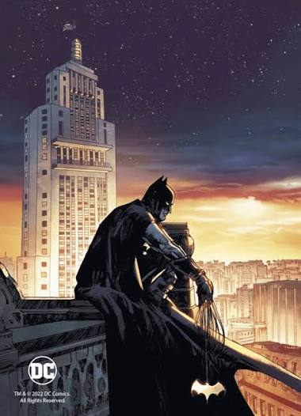
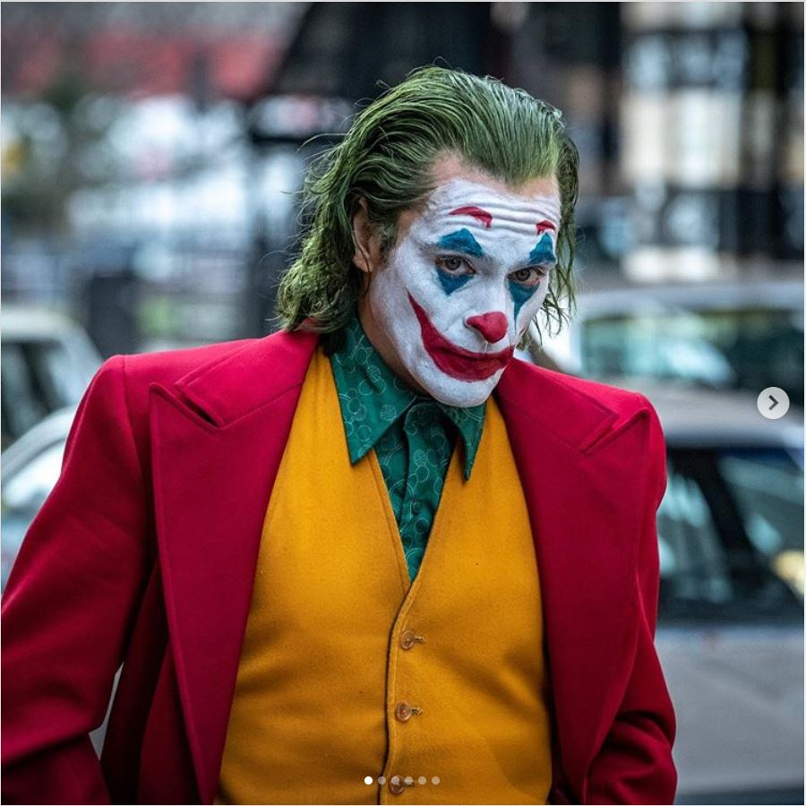

Batman
O protagonista da história, um vigilante que luta contra o crime em Gotham City.
Eu sou o Batmam
O Batman é um vigilante que protege Gotham City.
história do Batman é marcada por tragédias e desafios, mas ele continua a lutar pela justiça.

O protagonista da história, um vigilante que luta contra o crime em Gotham City.

O principal antagonista do Batman, um criminoso psicopata e imprevisível.
O Batman é conhecido por sua inteligência, habilidades de combate e uso de tecnologia avançada para combater